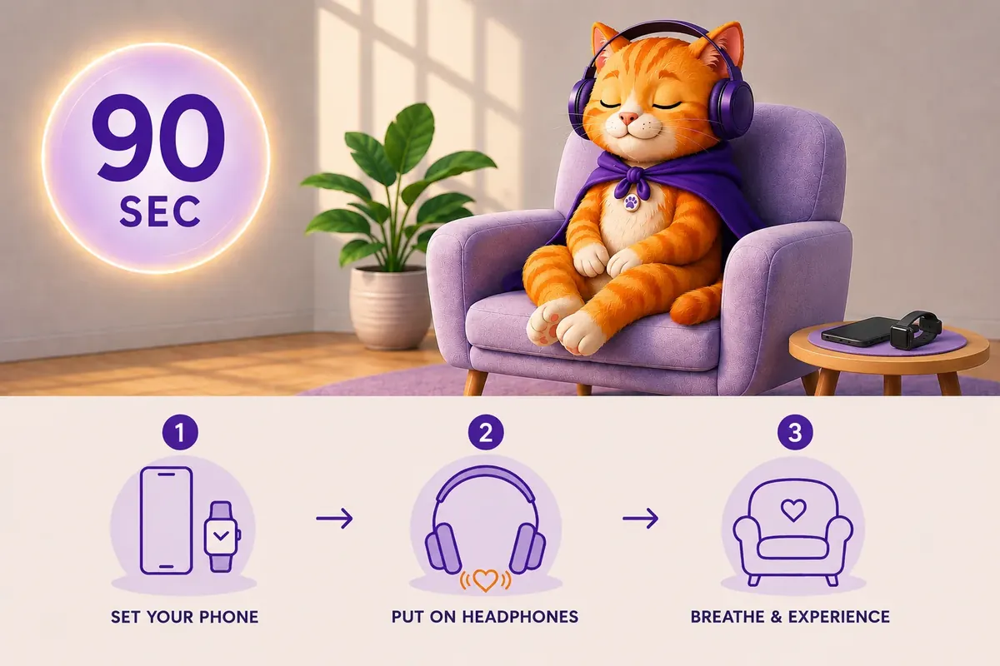
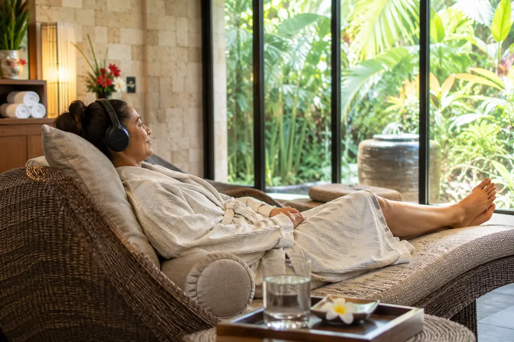
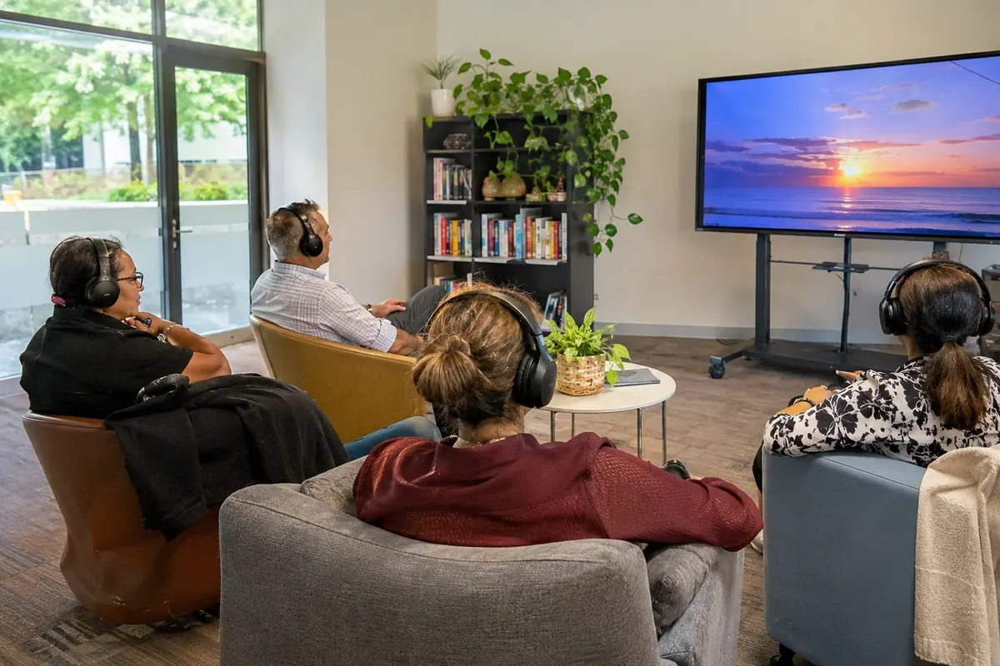
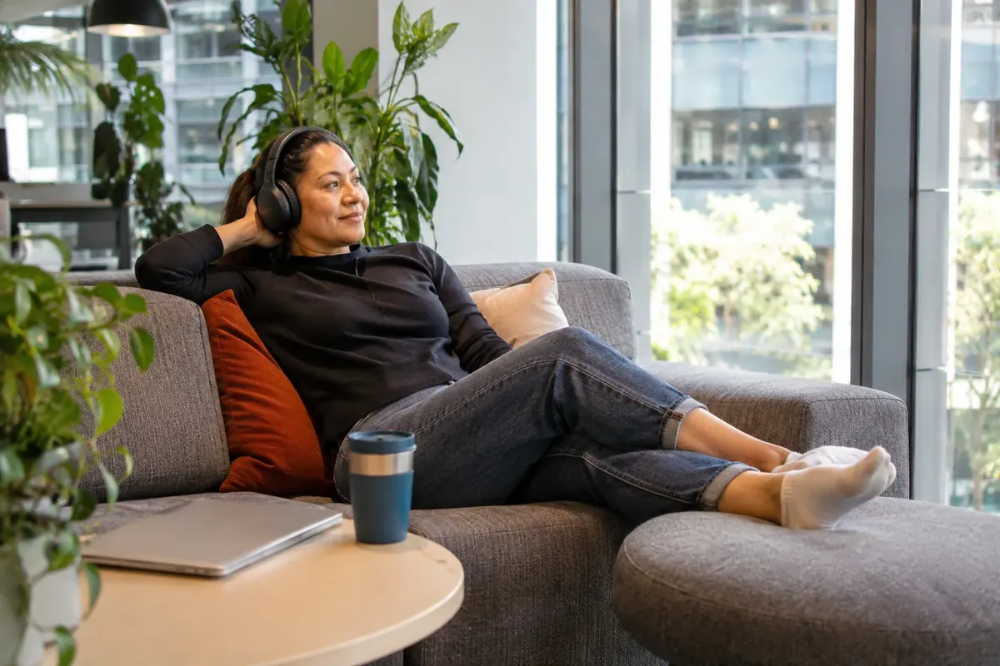
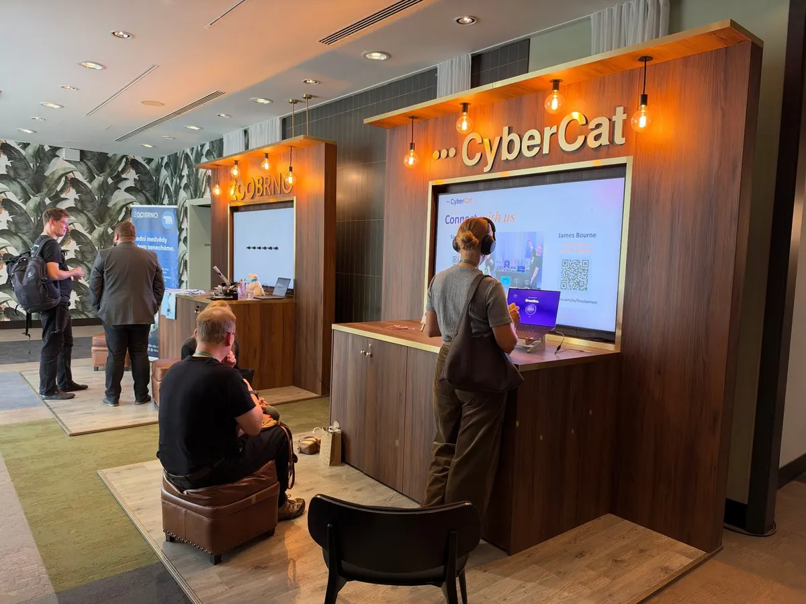

The Digital Wellness Reset
Communities and public programmes
At a community day, people of all ages take a 90-second pause. They leave with one simple habit: stop, check, then decide.
Short, guided digital detox experiences that help people pause, switch off and refocus.
These are simple, guided audio experiences, usually around 90 seconds. Participants put on headphones, take a short break and follow a message designed for their setting. No virtual reality headset or special technology is needed.

Every experience is the same simple idea: headphones on, phone down, ninety seconds to pause. Here is how it can look where you are.
Event photos are from real CyberCat sessions. Spa, school and workplace images show how each experience can look.
Communities and public programmes
At a community day, people of all ages take a 90-second pause. They leave with one simple habit: stop, check, then decide.

Spas and wellness venues
A guest arrives still checking messages. Before the treatment, headphones go on and the phone goes away. They arrive properly and start the treatment calm.

Schools and learning environments
Students come in from the break, phones still buzzing. A short, phones-away pause helps the class settle before the lesson begins.

Workplaces and teams
It is mid-afternoon and inboxes are full. Staff step away from their screens for a short reset, with a gentle reminder to pause before clicking anything unexpected.

Think: a digital detox bar for your conference or expo
By lunchtime, your delegates have spoken to 200 people. The Wellness Corner gives them 90 seconds to sit, breathe and switch off with our Digital Detox Wellness Reset. A short, immersive escape from the busy floor, and an activation people remember.

Conferences, exhibitions and trade shows
Want a bigger presence? A branded CyberCat space where delegates stop, take the Digital Detox Wellness Reset and talk with our team, just as they did at the OpenSSL Conference in Prague.
Hear from people who experienced the Reset at CIDESCO Fiji and OpenSSL Prague. Every video has English captions.
“Slow down and take the time to check things before you proceed.”
“It clearly tells me not to overreact.”
“We do have 90 seconds to step back and we should take advantage of it.”
“The pause concept is like putting a firewall in our mind.”
“A very clever way of conveying how to be cyber safe out there.”
“Having worked with mental health and performance programs for over 20 years, it was refreshing to experience the CyberCat Digital Wellness Reset. I was pleasantly surprised at how effective the short guided format was in breaking the cycle of stress and placing digital safety awareness in a wellbeing framework. I can strongly recommend the Reset as an opportunity to step away from digital stimulation, refocus and reinforce more considered decision-making online. I see it as a valuable way of bringing together digital safety education, awareness and wellbeing.”
Usually around 90 seconds. Participants put on headphones, take a short break and follow a guided message designed for their setting.
No. Participants only need headphones. No virtual reality headset or special technology is needed.
In communities, spas and wellness venues, schools and workplaces, and as a Wellness Corner or Conference Activation at conferences, exhibitions and trade shows. The same flexible programme is adapted to each setting.
Yes. We set up a Wellness Corner where delegates take the 90-second Digital Detox Wellness Reset: sit down, put on headphones, breathe and switch off. For a bigger presence, we can bring a branded Conference Activation. We travel to conferences and events in Australia, the Pacific and internationally.
At the CIDESCO World Congress in Fiji and the OpenSSL Conference in Prague in 2026. See our 2026 events.
Every event has busy, distracted delegates. Give them a place to pause, reset and leave with something useful. Talk to us about a Wellness Corner or Conference Activation for your conference, exhibition or workplace event.